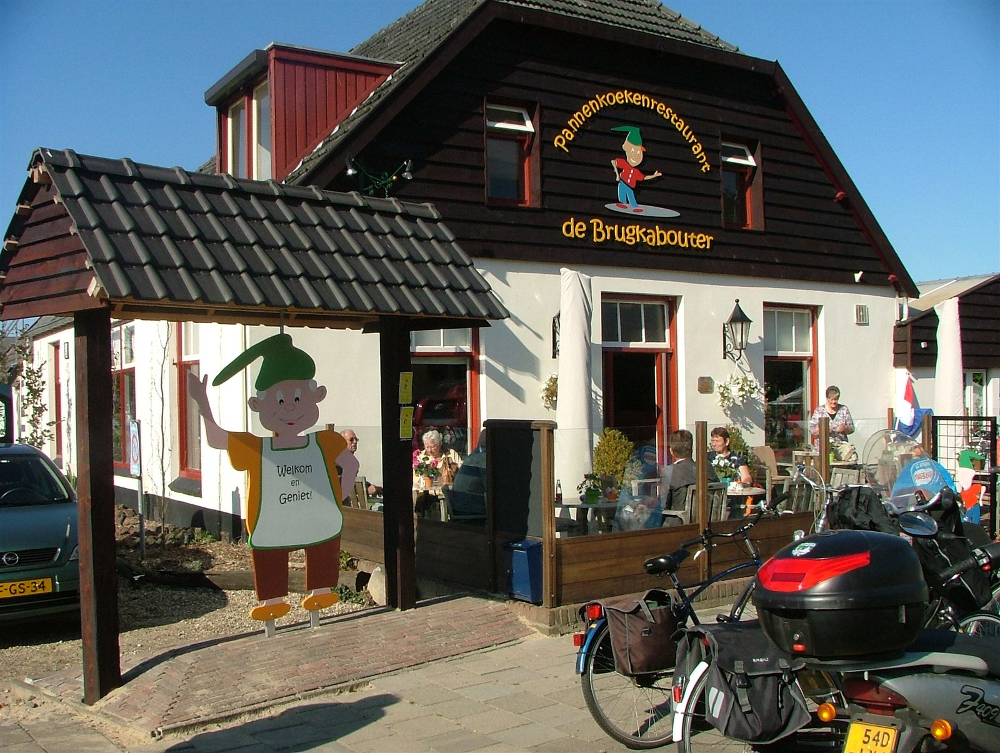
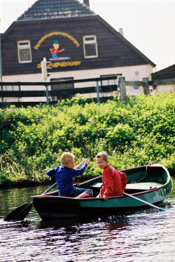

Pannenkoeken etenen buiten spelen.
Pannenkoekenrestaurant de Brugkabouter in Eerbeek, met een binnen- en buitenspeeltuin, waterfietsen, kano's en een midgetgolfbaan. Gratis spelen als u van de kaart eet.


Snel even weten
Reserveer op tijd, vooral in het weekend en tijdens vakanties, om teleurstelling te voorkomen.
Vanaf welke leeftijd mag ik spelen?
Vanaf elke leeftijd, maar niet alles is voor elke leeftijd geschikt. Er moet altijd een volwassene aanwezig zijn.
Entree voor kinderen?
Als er een gerecht van de kaart wordt gegeten, is de entree gratis. Volwassenen betalen niet voor de speeltuin.
Regent het?
Binnen spelen kinderen met ruim 300 grote legostenen. Een deel van het terras is overdekt en er liggen plaids klaar.
Kan ik pinnen?
U kunt bij ons pinnen en contant betalen. De speelplek en het terras zijn rookvrij.
De pannenkoekenkaart
Zoet, hartig of iets anders. Alle pannenkoeken zijn ook als kinderpannenkoek te bestellen.
Zoete pannenkoeken
- Naturel7,75
- Met appel9,10
- Met ananas8,75
- Met rozijnen8,75
- Met appel, rozijnen en kaneel9,25
- Met jam8,90
- Met chocopasta8,90
- Met honing9,25
- Met boerenjongens9,75
- Met gember8,95
- Met warme kersen en slagroom10,75
Hartige pannenkoeken
- Met ham9,25
- Met kaas9,25
- Met spek9,25
- Met ham en kaas10,45
- Met spek en kaas10,45
- Met ham en champignon10,35
- Met champignon en kaas10,35
- Met champignon, kaas en ui10,75
- Met paprika, champignon en ui10,75
Pannenkoek anders
- Shoarma pannenkoekMet heerlijk gekruid varkensvlees, knoflooksaus en frisse salade14,75
- Franse pannenkoekBelegd met camembert, brie en knapperige walnoten (extra honing + € 1,50)17,25
- Texaanse pannenkoekTexaans gekruide kipreepjes met chilisaus en frisse salade14,75
- Veluwse pannenkoekRijkgevuld met ham, spek, tomaat, champignon, ui en kaas14,25
- Italiaanse pannenkoekSalami met Italiaanse kruiden, ui, paprika en kaas14,25
- Noorse pannenkoekMet gerookte zalm, frisse salade en crème fraîche17,25
Gecombineerde pannenkoeken
- Met spek en appel10,45
- Met kaas en ananas10,55
- Met gember en kaas10,35
- Met appel en meegebakken kaas9,50
Voor onze kleine kabouters: al onze pannenkoeken zijn ook als kinderpannenkoek of pannenkoek voor kleine eters te bestellen (€ 1,75 minder).
Naast pannenkoeken is er de Brugkabouter-kaart: Brugmenukaart 2026 (pdf)
Spelen, varen en midgetgolf
De Brugkabouter heeft een binnen- en buitenspeeltuin. De speeltuin is gratis toegankelijk als er van de kaart gegeten wordt. In de omgeving kunt u heerlijk waterfietsen, kanoën of kajakken, en vanuit het restaurant gaat u met de picknickmand zo de natuur in.
Ook voor een familiedag of kinderfeestje: voor het hele gezin, kinderen, volwassenen en ouderen.
Boten- en waterfietsenverhuur
- Waterfiets, 4 personen€ 12,50 per uur
Bij personen onder 14 jaar 1 meerderjarige per waterfiets aan boord.
- Canadese kano, 3 personen€ 10,00 per uur
Bij personen onder 14 jaar 1 meerderjarige per boot aan boord.
- Kajak, 1 persoon€ 5,00 per uur
- Midgetgolf, 12 banen€ 1,50
Een gezellig partijtje, als u iets te vieren heeft of om samen te doen.
Voor alle boten: zwemdiploma A en het dragen van een zwemvest zijn verplicht. Prijzen per boot per uur.
Bekijk de virtuele rondleiding
Groepen, feestjes en uitjes
Een kinderfeest, schoolreisje, familiedag of buffet voor een groep. Kies hieronder wat bij u past en bel of mail om te reserveren.
Kinderfeestje vieren
Te boeken vanaf minimaal 6 kinderen. Bij alle kinderfeestjes krijgen de kinderen onbeperkt speelplezier, een kabouterspeurtocht, onbeperkt ranja, een kabouterpannenkoek en de door hen gekozen activiteit.
Siram
Maak de (katoenen) rugzak mooi met textielstiften. Een cadeau om mee naar huis te nemen.
€ 11,25 per kindEsra
Zet zelf een houten vogelhuisje in elkaar en schilder het daarna.
€ 10,50 per kindHerta
In een kano of kajak op het Apeldoorns kanaal varen. Zwemvest verplicht, alleen van 1 mei tot 1 november.
€ 9,00 per kindMila
Samen midgetgolfen op de 12 banen. Wie slaat een hole in one?
€ 8,75 per kindKareijn
De geheime mutsentuin: zoek de zeven mutsen, voer de opdrachten uit en vind misschien de schatkist. Voor de kleinere kinderen.
€ 9,00 per kindNobo
De weg vinden in het maisdoolhof en de vragen beantwoorden. In 2026 is er geen maisdoolhof, volgend jaar weer wel.
€ 9,25 per kindUit te breiden met: ijsje of cake versieren met snoepjes en spikkels (€ 3,70 per kind) of midgetgolf, 12 holes (€ 1,50 per kind).
Schoolreisjes
€ 6,50 per kind
- Heerlijk binnen en buiten spelen
- Een lekkere kinderpannenkoek
- Het hele verblijf ranja
- Een waterijsje tussendoor of aan het eind
Een hele morgen of middag vermaak met eten en drinken. Het speelparadijs is afgesloten en overzichtelijk voor kinderen en begeleiders, en er is een overdekt speelgedeelte voor als het weer onverwacht omslaat.
Geschikt voor kinderen t/m groep 3. Voor groepen van 30 kinderen of meer gaan we ook buiten de normale openingstijden open.
Familiedag: twee arrangementen
Kareyn
Minimaal 15 personen- Koffie met gesorteerd gebak
- Kabouterpuzzeltocht: ontdek de familie van Kareijn
- Vermaak in het speelparadijs
- Midgetgolf of een half uur varen met waterfiets of kano
- Pannenkoek met 2 ingrediënten naar keuze
- Een ijsje of koffie toe
Kinderen 4 t/m 10 jaar € 16,00: frisdrank met gebak, de activiteit, een kinderpannenkoek met een ingrediënt naar keuze en een kaboutercoupe toe.
Herta
Minimaal 15 personen- Koffie met cake
- Kabouterpuzzeltocht: ontdek de familie van Kareyn
- Vermaak in het speelparadijs
- Partijtje midgetgolf
- Pannenkoek met 1 ingrediënt naar keuze
- Daarna koffie of een ijsje
Kinderen 4 t/m 10 jaar € 12,00: frisdrank met een plakje cake, de activiteiten en een kinderpannenkoek met een ijsje toe.
Koud en warm buffet
€ 21,50 p.p., voor groepen vanaf 20 personen · kinderen 4 t/m 12 jaar € 13,95
- Grove zalmsalade met gerookte vis, garnalen en rauwkost, of boerenaardappelsalade met uitgebakken spekjes, polderuien en gekookte scharreleieren
- Koude pastasalade met Griekse schapenkaas, rode ui en rucola
- Warme seizoensgroenten uit de oven
- Rauwkostsalade met diverse garneringen
- Kipsaté met satésaus
- Beenham met champignonroomsaus
- Vegetarische quiche
- Kruidige aardappelpartjes uit de oven
- Stokbrood
Af te sluiten met een dessertbuffet vanaf € 5,50 p.p.: ijs (2 smaken), vers fruit, slagroom, aardbeiensaus, chocoladesaus en bavarois.
Lunchbuffet
€ 16,95 p.p., vanaf 20 personen · duurt 1,5 uur
- Twee soorten soep
- Grove zalmsalade met gerookte vis, garnalen en rauwkost, of boerenaardappelsalade met uitgebakken spekjes en gekookte scharreleieren
- Koude pastasalade met Griekse schapenkaas, rode ui en rucola
- Roomboter, verschillende soorten vleeswaren, jonge kaas, jam en chocoladepasta
- Verschillende broodsoorten
- Vers fruit
- Melk en karnemelk
Uit te breiden met bijvoorbeeld een kroket of een stukje hartige taart à € 1,80.
Barbecue
Vanaf 20 personen. Beide barbecues met: aardappelsalade met krokant uitgebakken spekjes of grove zalmsalade met gerookte vis, koude pastasalade met pesto, rauwkostsalade, patat, stokbrood, dressing, diverse sausjes en kruidenboter.
BBQ standaard
€ 20,75 p.p.- Hamburger
- Procureurlap gemarineerd
- BBQ-worstje
- Kipsatéspies
Kinderen 4 t/m 12 jaar € 14,95.
BBQ uitgebreid
€ 24,95 p.p.- Varkenshaasspies
- Biefstuk gekruid
- Ribeye gekruid
- Lamskotelet
- Kippendij gemarineerd
In overleg uit te breiden met meer of andere vleessoorten en/of salades, of af te sluiten met een dessertbuffet.
Picknick
Neem onze gevulde picknickmand mee, met lekkernijen, drinken en toebehoren, voor een gezellige lunch in de natuur rond de Brugkabouter.
- Picknickmand, volwassenen€ 9,50 p.p.
- Picknickmand, kinderen tot 12 jaar€ 5,00 p.p.
- Picknick met de waterfiets€ 14,00 p.p.
Kind tot 12 jaar € 8,00 p.p.
- Picknick met de kano€ 12,00 p.p.
Kind tot 12 jaar € 7,00 p.p.
De arrangementen zijn inclusief 2 uur kano of waterfiets en een goed gevulde picknickmand: varen naar een mooi plekje langs de waterkant. Minimaal 1 dag van tevoren reserveren.
Waarom de Brugkabouter?
Kijk goed rond in het restaurant en de speeltuin. Misschien ziet u opa Nobo wel, die helpt met pannenkoeken bakken.
Heel lang geleden, toen Magnicum opperkabouter was van alle kabouters, kwamen alle kabouters samen voor de grote vergadering. Elke keer werd er één kabouterfamilie uitgekozen voor een bijzondere opdracht bij de mensen.
In het kabouterjaar 1282 werd de over-, over-, overgrootvader van Kareijn uitgekozen: hij moest de mensen helpen met het maken, ophalen en onderhouden van de bruggen. Hij kreeg een speciale groene muts, op een speciale manier geknikt, zodat hij makkelijker onder de bruggen door kon lopen en varen. Zo werd hij door alle kabouters herkend als: de Brugkabouter.
Lees verder
Het is alweer 300 jaar geleden dat de vader van Kareijn, opa Nobo, zijn groene muts afdeed en aan Kareijn gaf. Nu kon opa Nobo eindelijk pannenkoeken gaan bakken, iets wat hij altijd al wilde! Als Siram groot is en genoeg heeft geleerd, krijgt hij de groene muts van zijn vader Kareijn. Deze gebeurtenis wordt elke keer weer verteld tijdens het midzomernachtfeest.
Een aantal kabouterjaren geleden kwam Kareijn bij ons pannenkoekenrestaurant wonen, zodat hij en zijn gezin dicht bij de brug wonen en opa Nobo ons kan helpen met pannenkoeken bakken.
Openingstijden & route
- 1 oktober – 1 juni: woensdag t/m zaterdag11.30 – 20.00
- Zondag10.00 – 20.00
- 1 juni – 1 oktober: ook dinsdag11.30 – 20.00
- Zomervakantiealle dagen open
Ook wij hebben personeelsgebrek en moeten daardoor soms onze openingstijden aanpassen. Kijk op Google voor de actuele openingstijden.